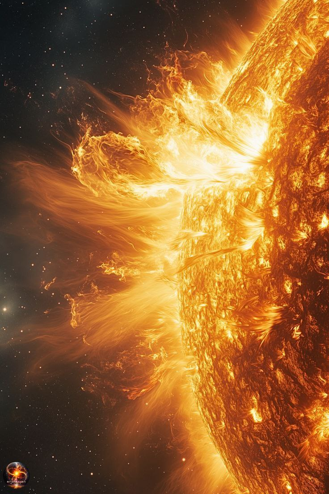
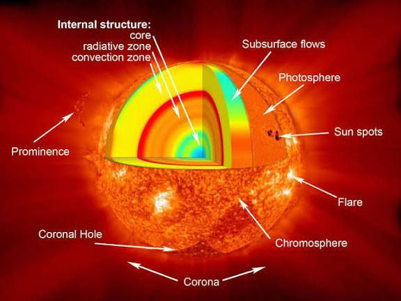

Sun
Center of the Solar System; gives light & heat.

အရွယ်အစား
1,391,000 km
တစ်နေ့ကြာချိန်
25h
အပူချိန်
ပေါ်ယံ ≈ 5,500 °C, အတွင်း ≈ 15,000,000 °C
လများ
0 Moon
Sun သည် Solar System ၏ အလယ်ဗဟိုတွင်ရှိသော ကြယ်တစ်လုံးဖြစ်ပြီး Solar System ၏ အကြီးဆုံးနှင့် အရေးအပါဆုံး အရာတစ်ခု ဖြစ်သည်။ Sun သည် အလွန်ပူသော ဓာတ်ငွေ့များ (အဓိကအားဖြင့် ဟိုက်ဒရိုဂျင်နှင့် ဟီလီယမ်) ဖြင့် ဖွဲ့စည်းထားသည်။ Sun မှ ထွက်လာသော အလင်းနှင့် အပူသည် Earth ပေါ်ရှိ အသက်ရှင်မှုအတွက် အလွန်အရေးကြီးသည်။ အပင်များသည် Sun အလင်းကို အသုံးပြုပြီး အစာထုတ်လုပ်ကြသည် (photosynthesis)။ လူသားများနှင့် တိရစ္ဆာန်များအတွက်လည်း နေ၏ အပူနှင့် အလင်းသည် အသက်ရှင်မှုအတွက် မရှိမဖြစ်လိုအပ်သည်။ Sun သည် အလွန်ကြီးမားပြီး Earth ထက် အချင်းအရွယ်အားဖြင့် ၁၀၉ ဆခန့် ကြီးသည်။ Solar System ထဲရှိ ဂြိုလ်များ၊ ဂြိုလ်တုများနှင့် အခြားအရာများအားလုံးသည် Sun ၏ ဆွဲအားကြောင့် Sun ကို လှည့်ပတ်နေကြသည်။ Sun ၏ မျက်နှာပြင်အပူချိန်မှာ ၅,၅၀၀°C ခန့်ရှိပြီး အတွင်းပိုင်းအပူချိန်မှာ မီလီယံများစွာ ဒီဂရီထိ ပူနိုင်သည်။ ထိုအပူနှင့် စွမ်းအင်များသည် nuclear fusion ဟုခေါ်သော လုပ်ငန်းစဉ်မှ ဖြစ်ပေါ်လာသည်။

Surface Details
Internal Structureထူးခြားချက်များ
Sun သည် Solar System ၏ အလယ်ဗဟိုဖြစ်ပြီး ဂြိုလ်အားလုံးကို လှည့်ပတ်စေသည်။ အလင်းနှင့် အပူကို ထုတ်ပေးပြီး Earth ပေါ်ရှိ အသက်ရှင်မှုအတွက် အရေးကြီးသော စွမ်းအင်ရင်းမြစ်ဖြစ်သည်။ နေသည် အဓိကအားဖြင့် hydrogen နှင့် helium ဓာတ်ငွေ့များဖြင့် ဖွဲ့စည်းထား